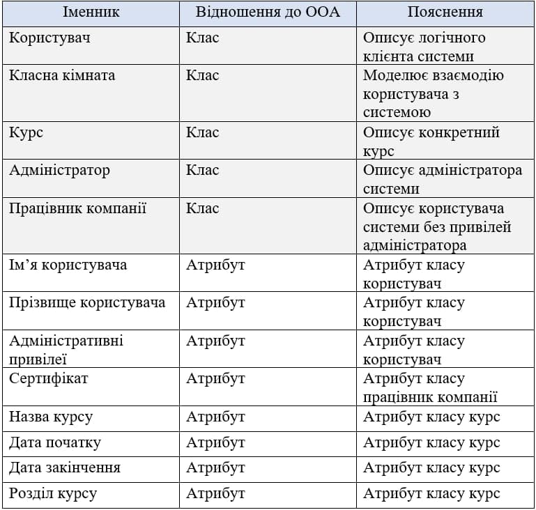

Опис об'єкта управління
Об'єктом управління є електронна сиситема проходження курсів.
Клієнт авторизується в системі та переходить у власний кабінет. Відповідно до рівня користувача отримує доступ до переліку курсів доступних для проходження. Після успішного завершення курсів користувач отримує можливість отримати сертифікат, як підтвердження завершення курсів. Особистий кабінет повинен містити інформацію про клієнта(яку він може редагуввати) та перелік сертифікатів, які він отримав.
Адміністратор повинен мати доступ до модифікації списку курсів, мати можливість модерувати користувачів застосунку.
Мета розробки проекту
- створення віддаленого доступу до навчальних матеріалів.
- підготовка фахівців, які необхідні компанії
- відображення процесу навчання.
Бізнес-задачі
- Пошук курсу
- Вибір курсу
- Проходження курсу
- Отримання сертифікату про завершення курсу
Бізнес-процеси
- Отримати список курсів
- Отримати інформацію про курс
- Обрати курс
- Отримати посилання на курс
- Отримати сертифікат
Сценарії дії системи
Користувач
- 1. Користувач виконує вхід до системи
- 2. Обирає курс для проходження(за певною темою чи з переліку доступних курсів)
- 3. Оримує посилання на курс
- 4. Отримує данні про проходження курсів
- 5. Отримує сертифікат, який підверджує проходження курсів
Адміністратор
- 1. Адміністратор виконує вхід до системи
- 2. Отримує доступ до бази даних
- 2.1. Працює із даними користувачів
- 2.2. Працює із даними курсів
- 3. Підверджує впроваджені зміни
Таблиця обґрунтування класів
Але потрібно зауважити, що система потребує додаткові класи для збереження даних, які будуть реалізовуватися у вигляді дата-класів, що згодом будуть взаємодіяти з базою даних, тому результуюча діаграма класів матиме більше класів, ніж це зазначено при об’єктно-орієнтованій декомпозиції.
Таблиця обґрунтування методів
Діаграма об'єктів

Функціональні вимоги замовника - UML-діаграми

Діаграма класів
Моделювання процесу реєстрації та навчання на курсах в ІТ-компанії Діаграма класів для проекту "Моделювання процесу реєстрації та навчання на курсах в ІТ-компанії". Було створено 7 класів та побудовані зв'язки між ними:
- User - Classroom — асоціація, так як користувач від класної кімнати не залежить
- Employee - User — наслідування, так як працівник специфікує функціонал базового користувача та розширює повноваження
- Administrator - User — наслідування, так як працівник специфікує функціонал базового користувача та розширює повноваження
- UserDatabase - User — агрегація, так як користувач може існувати без бази даних
- CourseDatabase - Course — агрегація, так як курс може існувати без бази даних
- Classroom - UserDatabase — композиція, так як класна кімната створює базу даних користувачів як невід'ємну свою частину
- Classroom - CourseDatabase — композиція, так як класна кімната створює базу даних курсів як невід'ємну свою частину